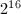
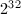
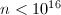

这里收集了一些Mathematica内部实现的注释, 主要来自于Mathemaitca全书的第四版（中文）.
插入的英文句子是统计的在Mathematica全书第六版中不同于第四版的部分, 便于比较.
隐藏目录
 引言
引言
这些注释适用于版本4.算法以及实现的其它方面随将来版本中的修改而改变.
需要强调的是,这些注释给出的只是所用到的基本方法和算法的大致描述.实际的实现通常包含了许多实质性原理和细节.
举例来说, 该注释简单的说DSolve使用Kovacic算法求解二阶线性微分方程. 但是用于实现这一功能的内部代码却有60多页长,包含了大量其它算法和大量精妙的思想.
数据结构和内存管理
一个Mathematica表达式在内部是由一组邻接的指针构成,第一个指针指向头部,其余指针指向它的后续元素.
每一个表达式包含一个特殊形式的哈希表,这个表用在模式匹配和计算中.
对每个符号来说,则是存在一个重要的记录了该符号所有信息的符号表入口.
大部分的原始对象,如串和数,被单独分配;而计算中生成的小整数和特定近似数的唯一副本却一直保留.
由Mathematica使用的每一块内存保留了一个记载它被调用的次数的记录.当这个记录为0,内存自动释放.
表达式中元素的连续存放减少了内存的分块和交换.但是,当一个长表达式中一个单独的元素被修改时,这可能导致对指针数组全部复制.为了避免这种复制,Mathematica使用了许多基于调用次数和预分配的优化技术.
在适当的场合,大的数列和嵌套数列自动以机器整数或实数的打包数组存放.Mathematica编译器自动被用来编译将要重复用到这种打包数组上的复杂函数.MathLink, DumpSave, Display,连同各种标准Import和Export在外部使用盒式数组.
基本的系统特性
Mathematica实质上是一个解释程序,它通过调用由头的符号表入口指向的内部代码扫描它遇到的表达式.任何变换法则—无论是以x -> y 的形式还是在一个定义中给出—都自动编译成允许快速模式匹配的一种形式.许多不同类型的模式通过特殊代码加以区分和处理.
考虑到空白和模式的其它特征,在模式匹配中使用了一个哈希表.与模式匹配有关的内部代码约有250页.
String patterns are implemented using a symbolic extension of the PCRE regular expression library.
当大量的定义用于描述一特定符号,一个哈希表会自动使用Dispatch格式生成,以便能迅速找到合适的法则.
数值及相关函数
数的表示和数值计算
大整数和高精度数以或进制的数组存储,这取决于机器整数的长度.
精确度在内部作为浮点数保存.
IntegerDigits和相关的进制转换函数使用了一种递归除法和占优算法.
N使用一个自适应过程来提高它内部工作精确度以便达到任意一种总精度所要求的精确度.
Floor, Ceiling和相关的函数使用类似于N的自适应过程由准确输入生成准确的结果.
基本算法
大整数和高精度近似数的乘法通过使用交叉存储Karatsuba和FFT算法实现.
Multiplication of large integers and high-precision approximate numbers is done using interleaved schoolbook, Karatsuba, three-way Toom-Cook and number-theoretic transform algorithms.
Machine-code optimization for specific architectures is achieved by using GMP.
整数幂通过一个基于Horner法则的算法实现.
Integer powers are found by a left-right binary decomposition algorithm.
近似数的倒数和有理数幂使用Newton法实现.
准确的根由数值估计起始得到.
重要的算法用来实现超过机器精度的近似数的所有运算.
基本算法使用了约400页的 C 源代码.
伪随机数
Random使用Wolfram法则30细胞自动生成元处理整数.
它使用Marsaglia-Zaman借位减法生成实数.
The default pseudorandom number generator for functions like RandomReal and RandomInteger uses a cellular automaton-based algorithm.
数论函数
GCD 使用Jebelean-Weber加速GCD算法,加上一个由Euclid算法与一个基于2的幂循环排除算法组合而成的算法.
PrimeQ 首先使用小素数检测整除性,然后使用2进制和3进制强伪素数检测,最后使用一个Lucas测试检测.
至1997为止,该过程仅对证明是正确的,并且可以猜想的是,对于更大的n,该过程仍可能判定一个复合数是素数.
NumberTheory`PrimeQ`包中包含了一个较慢的算法,该算法被证明对所有的n都是正确的.它能对是否是素数返回一个明确认证.
FactorInteger通过试除法和使用Pollard p-1,Pollard rho和连续分式法实现在除去小素数之间的转化.
FactorInteger switches between trial division, Pollard p-1, Pollard rho, elliptic curve and quadratic sieve algorithms.
NumberTheory`FactorIntegerECM`包包括了适于对某些很大的整数的因数分解的椭圆曲线方法.
Prime和PrimePi使用稀疏存储和筛选.对于较大的n,PrimePi使用基于素数密度的渐进估计的Lagarias Miller Odlyzko算法,并被转换给出Prime.
LatticeReduce使用Lenstra Lenstra Lovasz网格缩减算法.
为了找到所要求的项,ContinuedFraction使用修正Lehmer间接法,并通过重新自分块和贪心法来减少每一步所必需的数值精确度.
ContinuedFraction使用循环关系为无理二次函数寻找周期连续分段.
FromContinuedFraction使用由分块和贪心法优化的迭代矩阵乘法.
复合函数
大部分复合函数使用稀疏缓存和递归法.
Factorial, Binomial及其相关函数使用一个分块和贪心算法来平衡乘积中数位个数.
Binomial and related functions use a divide-and-conquer algorithm to balance the number of digits in subproducts.
n! uses an O(log(n)M(n)) algorithm of Schoenhage based on dynamic decomposition to prime powers.
Fibonacci[n]使用了基于n的二进制序列的迭代方法.
对较小的n，PartitionsP[n]使用Euler 五边形公式,而对较大的n，则使用非递归的Hardy Ramanujan Rademacher方法.
ClebschGordan及其相关函数使用了广义超几何分布序列.
初等超越函数
指数和三角函数使用Taylor级数,参数加倍的稳定递归,以及函数关系.
对数和反三角函数使用Taylor级数以及函数关系.
数学常数
常数的值在计算后就存储.
二进位分裂被用来对常数计算进行细分.
Pi使用Chudnovsky公式计算到10,000,000位之后.
E通过它的级数展开进行计算.
EulerGamma使用Brent McMillan算法.
Catalan通过一个线性收敛的Ramanujan和进行计算.
特殊函数
对机器精度，大部分特殊函数使用Mathematica所导出的有理极小极大近似.下面的注释主要应用到任意精确度.
一般来说,对多项式和超几何函数,正交多项式使用稳定递归公式.
Gamma使用递归,函数方程和Binet渐进公式.
不完全gamma和beta函数使用超几何级数及连分式.
PolyGamma使用了Euler-Maclaurin和式,函数方程和递归.
PolyLog使用Euler-Maclaurin公式,不完全gamma函数的展开和数值积分.
Zeta及其相关函数使用Euler-Maclaurin公式以及函数方程.在临界区附近它们也使用 Riemann Siegel公式.
StieltjesGamma使用用Keiper算法,该算法基于zeta函数的一个积分表示的数值积分.
误差函数和与指数积分相关的函数都使用不完全gamma函数进行求值.
逆误差函数使用二分法搜索和推广的高阶Newton法.
贝塞尔函数使用级数和渐进展开式.对于整数次,有些也使用稳定向前递归格式.
超几何函数使用函数方程,稳定循环法,级数展开和渐进级数展开方法.而且Nsum和与NIntegrate有时也可以使用.
ProductLog使用始于有理近似和渐进展开的高阶牛顿法.
椭圆积分使用递减高斯变换来求值.
椭圆theta函数使用以递归计算级数项的级数和.
另外一些椭圆函数主要使用代数几何平均数方法.
Mathieu函数使用傅立叶级数.Mathieu特征函数使用广义Blanch-牛顿法.
数值积分
当Method->Automatic时,NIntegrate在一维情形下使用GaussKronrod,而在其它的情形下使用MultiDimensional.
如果直接给出了MaxPoints设置,NIntegrate缺省使用Method->QuasiMonteCarlo.
GaussKronrod: 基于Kronrod点计算的带误差估计的自适应Gaussian积分.
DoubleExponential:非自适应双指数积分.
Trapezoidal:基本梯形法.
Oscillatory:用来实现包括三角函数和Bessel函数的积分的变换.
MultiDimensional:自适应Genz Malik算法.
MonteCarlo:非自适应Monte Carlo方法.
QuasiMonteCarlo:非自适应Halton Hammersley Wozniakowski算法.
数值加法和乘法
如果比率测试比不为1,则使用Wynn epsilon算法求解一系列部分和或部分积.
否则,则使用Euler-Maclaurin公式用于Integrate或NIntegrate.
数值微分方程
在Method->Automatic时,NDSolve可选择非刚性的Adams法和刚性Gear方法,它们都基于LSODE.
Adams:1-12阶的隐式Adams方法.
Gear:1-5阶的向后差分格式方法.
RungeKutta:非刚性方程的Fehlberg 4-5阶Runge-Kutta方法.
对线性边值问题使用Gel'fand Lokutsiyevskii追赶法.
对1+1维PDEs问题使用直线方法.
NDSolve的代码约有500页.
近似方程求解和最小值
多项式求根的实现基于Jenkins Traub算法.
对于稀疏线性系统,Solve和NSolve使用一些有效的数值方法,这些方法主要基于带Markowitz乘积的Gauss因数分解(约250页代码).
对代数方程组,NSolve首先使用一个有效的单项式排序计算出一个数值的Grobner基,然后使用特征值方法来确定根的数值解.
FindRoot使用了减幅Newton法,正割法和Brent方法.
在Method->Automatic时,FindMinimum使用了基于Brent的不同方法:在一维上时使用共轭梯度法,而在多维时使用修正Powell方法.
如果极小化函数是一个平方式的和, FindMinimum则使用Levenberg-Marquardt方法(Method->LevenbergMarquardt).
在Method->Newton时，FindMinimum使用Newton法.而在Method->QuasiNewton时，FindMinimum使用BFGS形式的拟牛顿法.
ConstrainedMax及其相关函数使用改进单纯形法.
数据处理
Fourier使用带长度素因子分解的FFT算法.当素数因子很大时, 则使用快速卷积方法来保持O(n log(n))的渐进复杂度.
对实输入,Fourier使用一个实变换方法.
如果可能,ListConvolve和ListCorrelate使用FFT算法.对于准确的整数输入,则需要计算足够多的数位以得出准确的整数结果.
InterpolatingFunction使用离散差分来构造Lagrange或者Hermite插值多项式.
Fit 通过计算构造矩阵伪逆的相应向量的乘积来实现.
近似数值线性代数
机器精度矩阵通常被转化为一个特殊的内部表示来进行处理.
在适当的时候会使用与LINPACK,EISPACK和LAPACK等类似的算法.
For dense arrays, LAPACK algorithms extended for arbitrary precision are used when appropriate. BLAS technology is used to optimize for particular machine architectures.
LUDecomposition, Inverse, RowReduce和Det使用带主元的Gaussian消去法.LinearSolve使用同样的方法,和高精度数的迭代改进.
SingularValues使用带Givens变换的QR算法.PseudoInverse和NullSpace则基于SingularValues.
QRDecomposition使用Householder变换.
SchurDecomposition使用QR迭代.
MatrixExp使用Schur分解.
MatrixExp uses variable-order Padé approximation, evaluating rational matrix functions using Paterson-Stockmeyer methods, or Krylov subspace approximations.
准确数值线性代数
Inverse和LinearSolve使用基于数值近似的有效行变换法.
当Modulus->n时,则使用模Gaussian消元法.
Det使用模方法和行变换,通过使用Chinese Remainder Theorem构造出结果.
Eigenvalues通过对特征多项式进行插值来实现.
MatrixExp使用Putzer方法或者Jordan分解.
代数和微积分
多项式处理
对于单变量多项式,Factor使用变化Cantor Zassenhaus算法按模分解一个素数,然后使用Hensel上升重组法在整数域构造因子.
在代数数域上进行因式分解时先寻找有理数域上的一个初始元素,然后使用Trager算法来实现.
对多变量多项式,Factor通过用适当的整数选择替换除一个变量外的所有变量,然后分解所得到的单变量多项式,并使用Wang算法重新构造多元因数来实现.
除一般多项式处理外,Factor的内部代码约有250页.
FactorSquareFree通过寻找一个微商然后反复计算GCD来实现.
Resultant要么使用显式子结式多项式剩余序列要么使用使用Chinese Remainder Theorem的模序列.
Apart要么使用Pade技术要么使用待定系数法.
PolynomialGCD通常使用包括Zippel稀疏模算法在内的模算法,但在某些情况下使用子结式多项式剩余序列.
符号线性代数
RowReduce,LinearSolve和NullSpace都基于高斯消元法.
Inverse使用了余子式展开和行变换.主元通过寻找简单表达形式来选取.
对小矩阵，Det直接使用余子式展开,而对较大的矩阵则使用高斯消元法.
MatrixExp首先找到特征值然后使用Putzer方法.
各种函数的零点测试通过在随机数值已代入变量后使用符号变换和基于区间的数值近似来实现.
准确方程求解
对线性方程使用高斯消元法和其它一些线性代数方法.
表示代数数的Root对象常常使用有效的数值方法来分隔开和处理.当ExactRootIsolation->True时,对于实根,Root使用基于Descartes符号法则的一个算法的连分式,而对于复根则使用Collins-Krandick算法.
对于单一的多项式方程,Solve使用显式四阶功式,并试图使用Factor和Decompose化简多项式,和识别割圆以及其它特殊多项式
对多项式方程组,Solve构造一个Grobner基.
Solve和GroebnerBasis使用了有效的Buchberger算法.
对非多项式方程,Solve试图改变变量并增加多项式条件.
Solve的代码约有500页.
化简
FullSimplify自动使用约40种一般代数变换,和适应于大约400种数学函数的法则.
广义超几何函数大约使用了70页的Mathematica变换法则进行化简.这些函数是Mathematica中许多微积分运算的基础.
FunctionExpand使用推广Gauss算法来展开含有的有理数倍参数的三角函数.
在适当的时候,Simplify和FullSimplify对结果进行缓存.
如果指定变量是实的,Mathematica使用基于柱代数分解的方法来推导出适用的变换.
对于一般的多项式不等式,则使用带改进McCallum投影算子的Collins算法.对于严格不等式,则采用Strzebonski方法.对线性不等式,使用的方法要么基于单纯形法要么基于Loos Weispfenning线性消元法.
如果多项式中包含方程,则采用Grobner基方法.
对于非代数方程,则要使用有关数据库从它们的定义域中确定值域.只要值域是半代数集合,则使用面向多项式的算法.
对整数函数,则以Mathematica法则的形式使用了几百个数论的定理.
微分和积分
Differentiation使用了缓存来避免重复计算局部结果.
对于不定积分,只要被积函数和积分能被初等函数,指数积分函数,多对数及其相关函数表示,则使用推广Risch算法.
对于其它不定积分,则使用带模式匹配的启发式化简.
Mathematica中的算法囊括了诸如Gradshteyn Ryzhik之类标准参考书中的所有不定积分.
不包含奇点的定积分主要通过求不定积分的界来实现.
许多其它的定积分使用了Marichev-Adamchik Mellin变换方法来实现.其结果最初常常表示由Meijer G函数表出,从而可以使用Slater定理转换为超几何函数然后进行化简.
Integrate使用了约500页Mathematica代码和600页C代码.
微分方程
常系数线性方程使用矩阵指数的方法求解.
解能表示为初等函数及其积分的变系数二阶线性方程使用Kovacic算法求解.
Higher-order linear equations are solved using Abramov and Bronstein algorithms.
多项式系数的线性方程通过使用Mellin变换表示为特殊函数来求解.
Linear equations with rational function coefficients are solved in terms of special functions by using Mellin transforms. Equations with more general coefficients are if possible reduced using variable transformations.
Systems of linear equations with rational function coefficients whose solutions can be given as rational functions are solved using Abramov-Bronstein elimination algorithms.
如果可能,非线性方程将使用对称化简技巧求解.对一阶方程采用古典方法,而对二阶方程和方程组则使用Bocharov方法.
Piecewise equations are typically solved by decomposition into collections of boundary-value problems.
For linear and quasilinear partial differential equations, separation of variables and symmetry reduction are used.
For first-order nonlinear PDEs, complete integrals are computed by reduction through Legendre, Euler and other transformations.
For differential-algebraic equations, a method based on isolating singular parts by core nilpotent decomposition is used.
Factorization methods for higher-order differential equations use techniques due to Bronstein and van Hoeij.
偏微分方程使用分离变量法和对称化简法求解.
DSolve使用了约300页Mathematica代码和200页C代码.
和与乘积
多项式级数使用Bernoulli和Euler多项式求和.
包含有理函数和阶乘函数的级数使用基于广义超几何函数的Adamchik算法求和.
含有多重伽马函数的级数使用积分表示求和.
Dirichlet及其相关级数使用模式匹配来求和.
对于无穷级数,要进行d'Alembert和Raabe收敛性检验.
Mathematica中的算法囊括了诸如Gradshteyn Ryzhik之类的标准参考书中90%以上的求和方法.
乘法主要使用模式匹配实现.
Sum和Product使用了大约100页的Mathematica代码.
级数和极限
级数通过递归对带参数级数展开的函数进行级数展开实现.
极限通过级数和使用其它方法求得.
Assumptions in limits and series are processed using a general-purpose evaluate-with-assumptions mechanism built into Refine and Simplify.
递归方程
RSolve solves systems of linear equations with constant coefficients using matrix powers.
Linear equations with polynomial coefficients whose solutions can be given as hypergeometric terms are solved using van Hoeij algorithms.
Systems of linear equations with rational function coefficients whose solutions can be given as rational functions are solved using Abramov-Bronstein elimination algorithms.
Nonlinear equations are solved by transformation of variables, Goektas symmetry reduction methods or Germundsson trigonometric power methods.
The algorithms in Mathematica cover most of the ordinary and q-difference equations ever discussed in the mathematical literature.
For difference-algebraic equations, a method based on isolating singular parts by core nilpotent decomposition is used.
输出和接口
图形
为了不依赖于显示分辨率，对3D图形使用了表面消隐技术.
使用一个用户书写PostScript解释程序在前端中使用图形.
笔记本使用一个与位图格式无关的用户平台.
前端
前端使用MathLink同时实现与内核的通信以及它内部不同成分之间的通信.
前端中所有菜单项和函数通过使用Mathematica表达式指定.
配置文件和优先选择文件使用Mathematica语言格式.
Help Browser基于由本书中同样源代码生成的Mathematica笔记本.
笔记本
笔记本被表示为Mathematica表达式.
笔记本文件以Mathematica注释的形式包括了隐藏的附加信息概要.这些信息使得有效随机存取成为可能.
笔记本的附加存储使得数据重写和对已写入的数据移出的可能性达到最小.
平台无关的双缓冲被默认用来使窗体内容更新时闪烁次数最少.
自动滚屏使用一个理论控制机制来优化光滑度和可控性.
所有特殊字符都使用Unicode表示的与平台无关的形式.而具体的日本汉字和其它字体由映射表来建立.
拼写检查和连字符通过算法和100,000字的标准英语词典,加上20,000字的技术词典,以及5000 Mathematica词语及其它附加词语实现.拼写校正则通过原文和语音规则实现.
MathLink
在OSI中,MathLink是能放在任何基于通信和流基础上的传输媒质上层的表示层协议.
当一个连接两端确实是兼容的计算机系统时,MathLink将使用一种压缩格式对数据进行编码.
MathLink能够像Mathematica表达式一样传输出诸如中断的数据块.
如果可能,MathLink使用动态链接共享库来实现.
表达式的标准化
前端使用一个有向无环图来表示标准表达式的盒框结构.
盒框使用运算优先分析算.